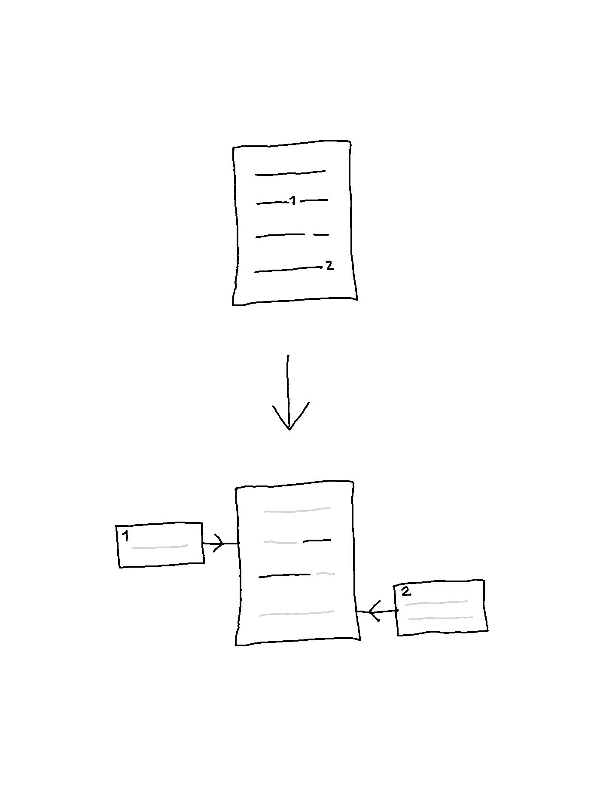
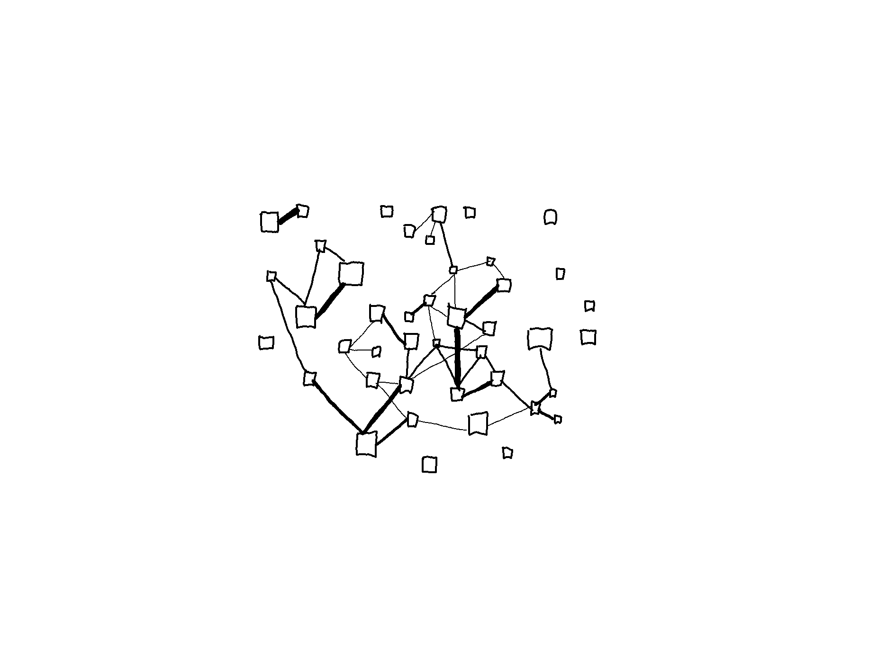
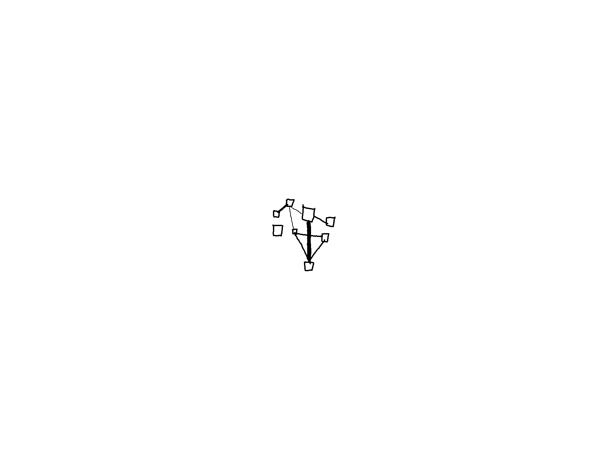
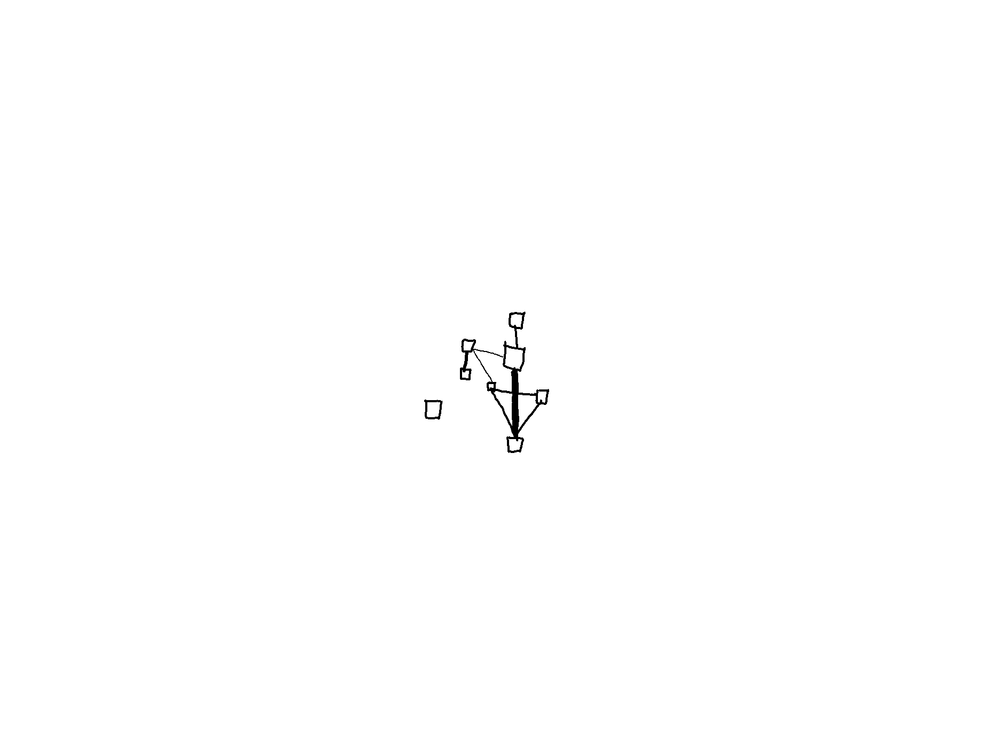
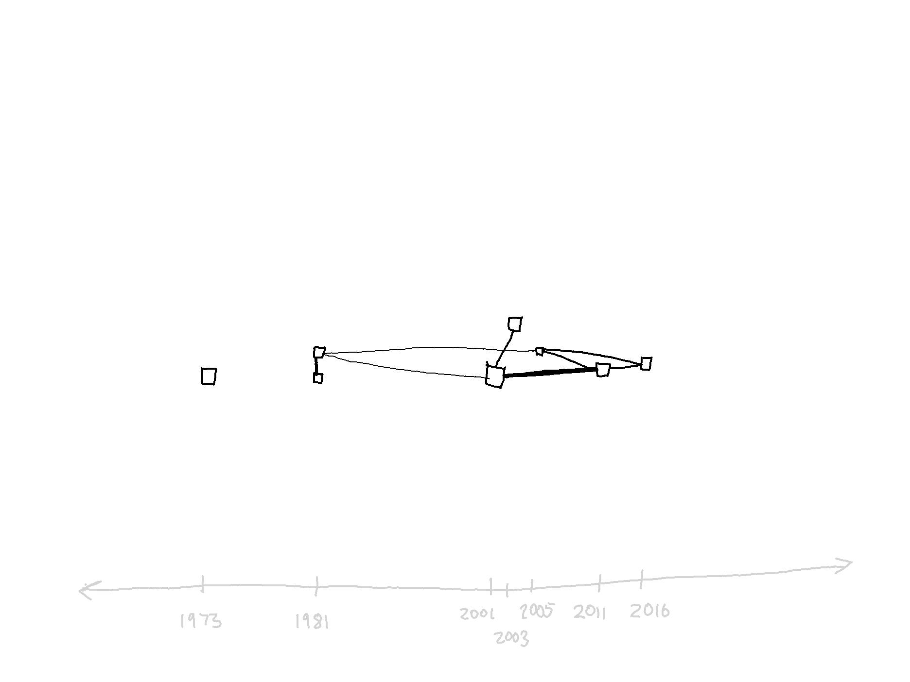
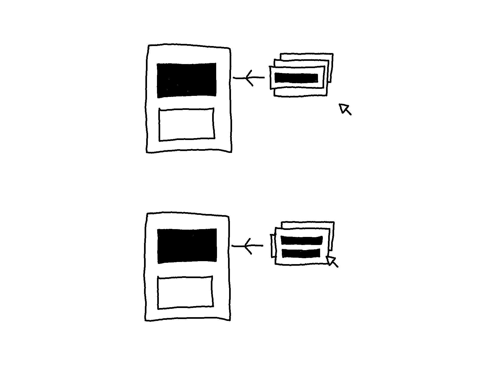
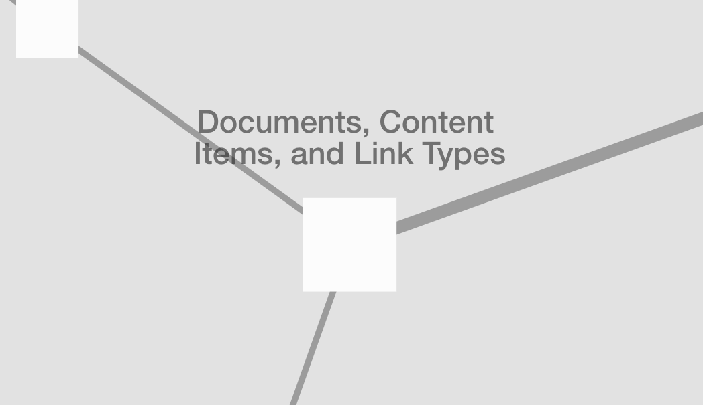
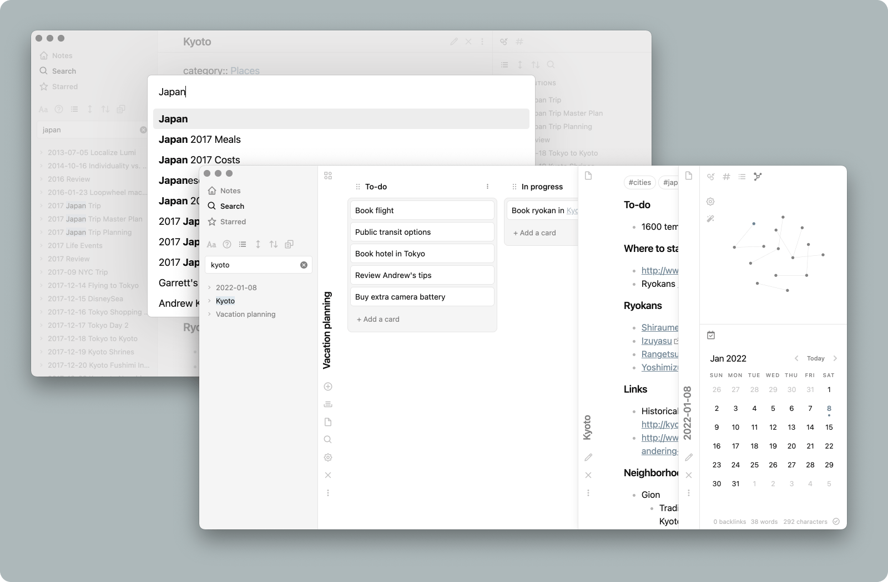
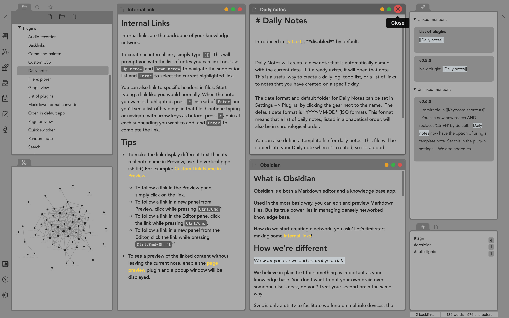

Further Developments
The prototype uses sample content developed throughout the process, serving as an example of how the three link types (taglink, seqlink, and transclusion) can be applied to realize the interconnective structure of documents and how it can be accessed through interaction.
Each taglink has a descriptive label describing the connection between documents. It is possible to select a document in Zoomed-Out View to enter Zoomed-In View and select aliases to traverse linked documents. It is, however, not yet possible to edit or add documents and links. It is possible to filter documents and links in Zoomed-Out View, enabling people to view a subset of the document collection based on the sample metadata. The default arrangement of documents and links in Zoomed-Out View is set according to the seqlinks. However, many other arrangements based on the metadata and link types should be configurable.
There are many possibilities for further development of this research project. The proposed next steps involve determining the technical implementation of the prototype and:
- Developing an edit mode with a time dimension.
- Extending the filtering capabilities.
- Extend the capacity for arranging documents and links to produce different renditions based on metadata.
- Developing a feature for overlapping links.
- Make the (UI) configuration modifiable.
- Extending the features based on Nexae being a closed system.
1. An edit mode with a time dimension
The prototype allows only for accessing the pre-mapped structure of sample content, which means that the option to edit documents, links, or metadata is not yet possible.
Questions that arise with developing an edit mode are:
- What happens when documents undergo changes?
- What happens when adding a document referencing other documents that have not been added to Nexae?
- What happens when adding documents containing concepts that have been abandoned, such as footnotes and citations?
A time dimension would need to be developed so that different states of documents are stored and can be accessed. A timestamp plugin could be implemented, with the possibility to give timestamps titles (i.e., name different versions.
It could involve a prompt asking for the referenced document to be added or a computer program that searches the web for the linked document and automatically adds (and transforms) it. If the documents are not found, then the question is, what would the visual implementation of a missing linked document look like and function?
Adding a document with footnotes could entail the content items (s) transforming into separate documents linked (with a taglink) to the added document.
 Adding a document with footnotes to Nexae
Through NLP techniques, suggestions for labels of the taglinks and metadata to the document could be provided, which could be manually confirmed. Alternatively, the suggestions could be skipped, and the labels added manually.
2. Extending the filtering capabilities
A key problem with mapping multiple structures is that it inevitably leads to complex overlapping information. Filtering documents and links (together with the two view modes) have been proposed as a way to engage with the complexity of information. At this stage, the prototype offers basic filtering — select a tag to view only that tag. This could be further explored by designing ways for organizing and selecting sets of tags according to presets. Presets would allow people to traverse the docuverse by viewing only a set of tags instead of (de)selecting each tag individually.
Seeing as multiple taxonomies would co-exist, another question is how people would be able to share the presets of their developed taxonomies.
3. Extending the capacity for arranging documents and links to produce different renditions based on metadata
Beyond utilizing metadata for filtering, it could also be utilized for arranging documents in Zoomed-Out View to gain an infographic-like overview. For example, the image below could be a document collection seen in Zoomed-Out View.

To investigate the concept of evolution, #evolution (or a preset named Evolution that contains a set of related tags) is selected in the menu, filtering the document collection so that only a subset is shown:

The possibility of arranging the documents according to the set sequences (determined by seqlinks) could be useful for the investigation.

Alternatively, to investigate how the concept has evolved, it may be useful to arrange the documents and links according to the date of publication, rendered in a timeline view:

4. Developing a feature for overlapping links.
The idea is that instead of embedding links, they are attached. In this way, links are an overlay on top of the content. The implementation of overlapping links still needs to be explored. Below is a sketch of stacking multiple links to the same content item in the form of a deck. Upon hovering on an alias, it comes to the front, and it should be possible to rearrange the order.

5. Make the (UI) configuration modifiable.
The default configuration of Zoomed-Out View shows the title of a document above each node. However, it should be configurable to show any metadata (e.g., year of creation, status, version number).

Like most plain text editors (e.g., Atom, Sublime Text 3) and Markdown editors (Obsidian, Typora), configuring the UI theme should also be possible. Obsidian, for example, can be configured to have documents stacked side by side as sliding panels:

Or as multiple windows in different sizes within the main window:

6. Extending the features based on Nexae being a closed system.
Making documents by another writer public
Content is added to Nexae rather than linked (externally). Based on the premise that there can be no copies, what happens if a document is made public that has already been added by someone else? If a document has already been added to Nexae, it must merge with the existing document (links and metadata).
Sharing and collaborating
Once a document is made public, it should be possible to configure the edit settings. For example, granting full edit mode would allow people to edit the contents and links. Granting limited edit mode would allow people to only create links to that document. In both cases, granting open access or access to a select number of people should be possible.
The next entry is the conclusion of this research project.